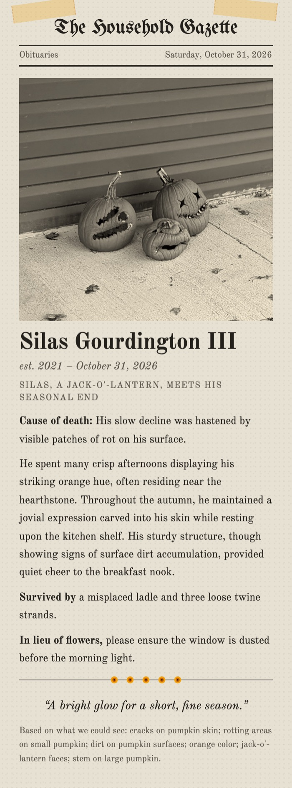
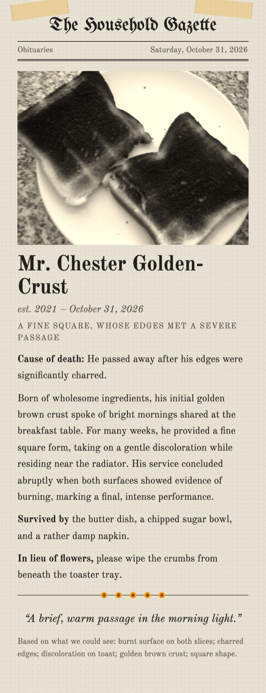
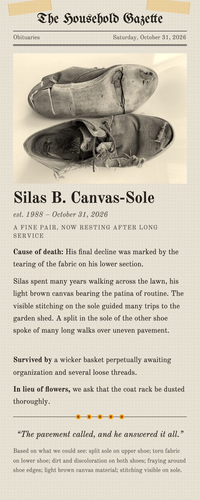
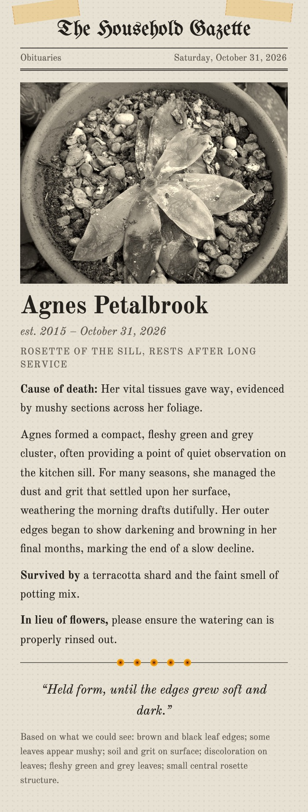
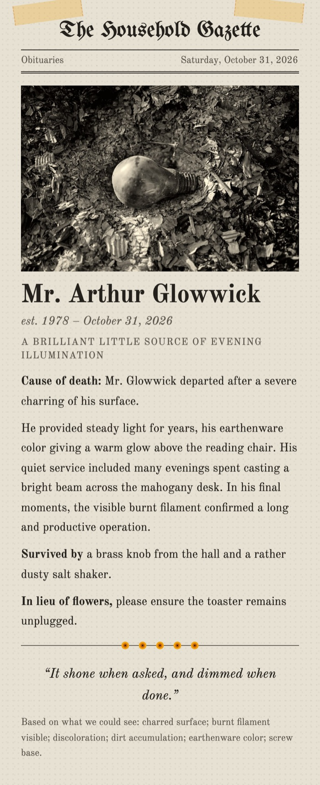
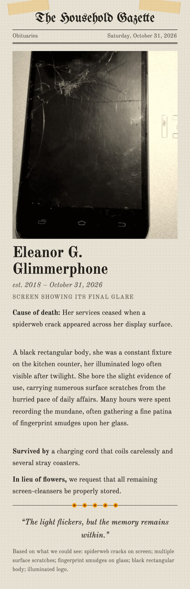
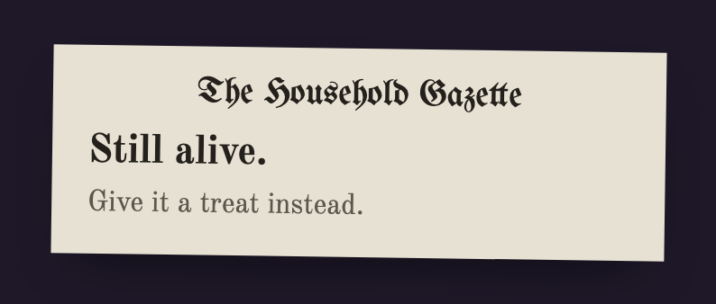
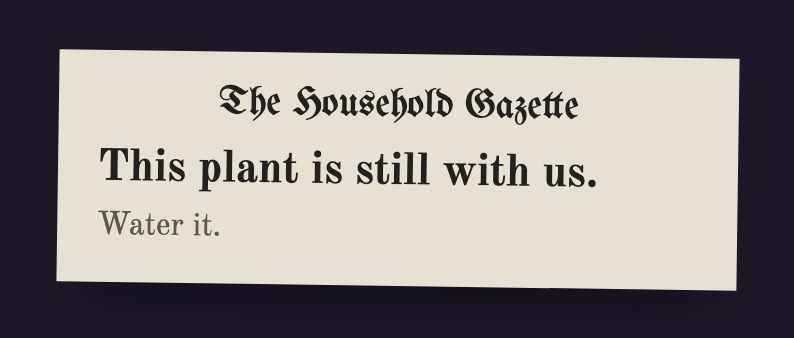

Here Lies
Obituaries for the things that died in your house, written by a model on your own laptop.
It may invent a name. It may not invent a scratch.
Recently departed
Real cards, downloaded from the app. Gemma 4 looked at each photo on a laptop, wrote the obituary, and plain code checked every detail it cited. Click a card for the full size.












Some things are still alive
People, pets and healthy plants get a notice instead of an obituary. In the test run it turned away the cat, the dog, the monstera and the person, every time.


How it works
- 1 · LookGemma 4 sees the photoIt lists what it can see on the object, injuries first, and code numbers each detail.
- 2 · Gateplain codePeople, pets and healthy plants stop here with a still-alive notice.
- 3 · WriteGemma 4, text onlyThe writer never sees the photo. It writes from the numbered list and cites a number for every physical sentence.
- 4 · Checkplain codeEvery cited number must exist, and the cause of death must be real damage or wear. A failing draft gets one rewrite, then repair.
A name, yes. A scratch, no.
The name, the birth year and the jokes are invented on purpose. The body is not. Each sentence about how the object looks has to point at a detail from the looking step, and Go code checks the pointer before the card is printed. The card footer lists those details, so you can hold the obituary up against the photo.
I ran 17 photos from Wikimedia Commons through the real pipeline on my laptop and checked every detail on every card against its photo by eye.
| Gate decision correct | 16 of 17 |
| Passed the check on the first draft | 12 of 13 |
| Details on printed cards | 65 |
| Really in the photo | 53 |
| Not in the photo | 4 |
| Too close to call | 8 |
| Median seconds to look, then write | 0.8 + 2.4 |
The check proves that a sentence points at a listed detail. It cannot prove the detail is real: two of 13 causes of death rested on details I could not find in the photo, a "missing screw hole" and a "torn" umbrella that was only folded. A blurred green glow got buried as a flower. The full table is in eval/results.md.
Run it yourself
You need Ollama, Go 1.26 and Node 20 or newer.
ollama pull gemma4:e4b
git clone https://github.com/nazboyko/here-lies && cd here-lies
make runOpen http://localhost:8787. The server also prints an address for your phone on the same Wi-Fi.
Your photos stay home
- The photo goes from your browser to your own laptop and nowhere else. No account, no upload to a company, no retention policy to read.
- The browser shrinks it and drops the EXIF data before sending. The server keeps it in memory for one request and never writes it to disk.
- The page loads nothing from the internet. The browser test records every request during a full run and found none that left the machine.
- With the model pulled, it works with Wi-Fi off, and each obituary costs nothing.
Credits
Gemma 4 by Google under the Gemma Terms of Use, run through Ollama. html-to-image, React and Vite under MIT. Old Standard TT and UnifrakturMaguntia under the SIL Open Font License. Test photos from Wikimedia Commons, turned gray and placed on the cards:
| Old jack-o-lanterns, Giulia Forsythe | CC BY 2.0 |
| Two pieces of burnt toast, Sheep purple | CC BY 2.0 |
| Worn-out grey canvas shoes, Wolfmann | CC BY 4.0 |
| Homebase succulent rescue attempt, stephen boisvert | CC BY 2.0 |
| Burnt light bulb on the ground, Shixart1985 | CC BY 2.0 |
| MyPhone my27 front panel, JGBlue1509 | CC BY 4.0 |
.jpg){kind=link}


.jpg){kind=link}